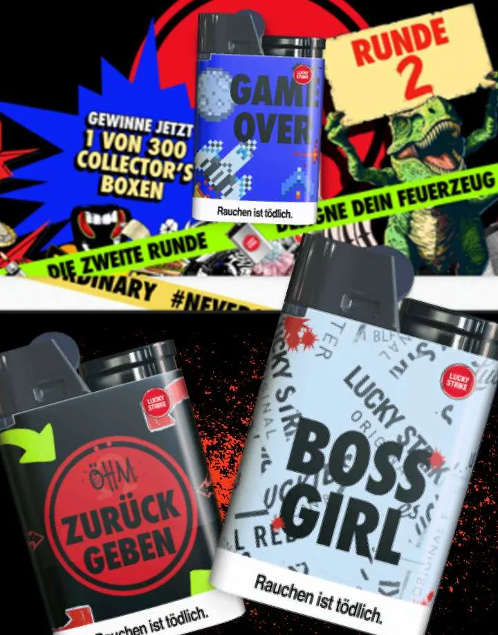

← Work / No. 03
Lucky Strike
An iconic brand that young people had simply stopped hearing about.
Context
Lucky Strike was the fifth largest brand in Germany, strong among consumers over 45.
Challenge
Declining relevance among consumers under 30.
Goal
Rebuild Lucky Strike's relevance with consumers under 30.
Focus groups
Older consumers saw Lucky Strike as bold, rebellious and iconic. Younger ones had weak or confused associations with the brand, and often mixed it up with Marlboro's American cowboy image.
The key barrier was dormancy. Young consumers had not heard from the brand in a long time, so it lacked salience.
Diagnosis
The brand was read as an outdated “American cowboy” and had become culturally invisible after years of silence, despite deep, authentic roots in music and counterculture.
Strategy
Re-establish Lucky Strike as a symbol of creativity and individuality, driven by cultural engagement through music, art and self-expression. Focus on interactive activations that let people shape the brand on their own terms.
Concept
Provoke self-expression through creativity.
Activation one
Design your perfect lighter. Online, people created and voted on custom lighter designs. The winning designs were produced and sold nationally, and their creators got festival access and a festival aid box with branded goodies.
Activation two
At the Luckies festival van, fans could work with a local artist to create and get a tattoo, drawing on the brand's cultural roots in music and art.

